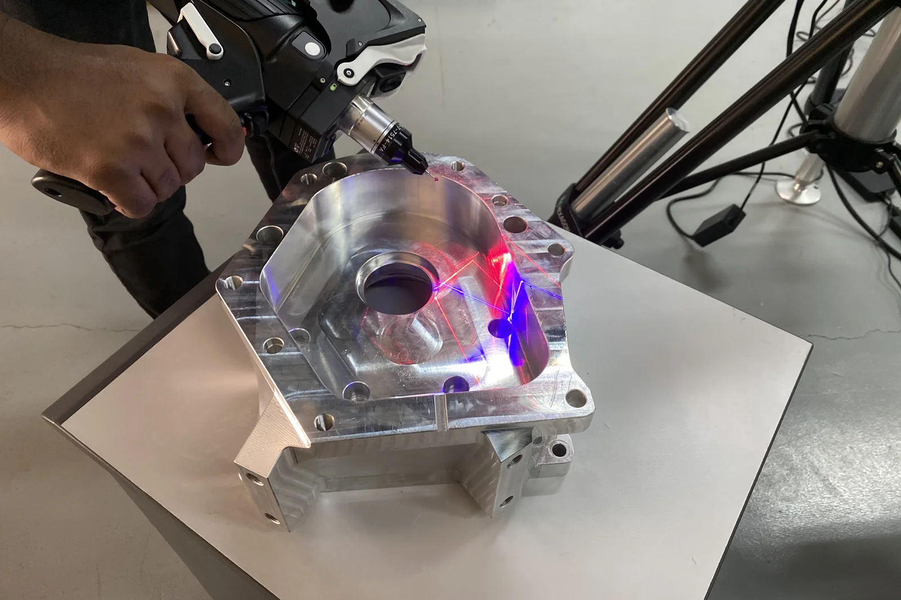
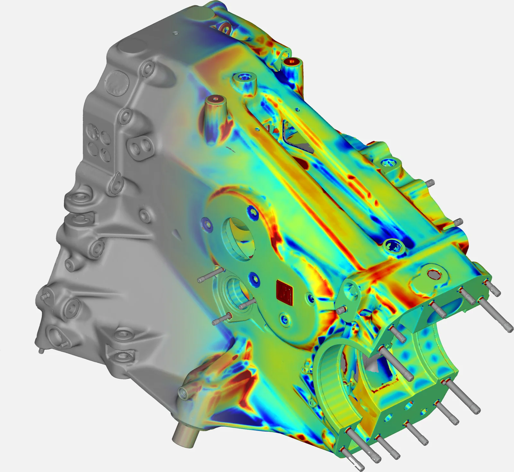

Every quality team faces the same question sooner or later: should this part go on the CMM, or should we 3D scan it? Both are proven, and neither wins in every case. They measure in different ways, so the right choice depends on the part, the tolerance and what you need to know.
How does each method work?
A coordinate measuring machine (CMM) touches the part with a probe, one point at a time. It records precise coordinates at selected locations such as hole centres, datum faces and bore diameters, and compares them with the nominal values.
A 3D scanner (laser or structured light) captures millions of points across the entire surface. The scan is aligned to the CAD model and the software calculates the deviation everywhere, usually shown as a colour map: green within tolerance, red where material is above nominal, blue where it is below.

Side-by-side comparison
| CMM | 3D scanning | |
|---|---|---|
| Data | Discrete points at chosen features | Full surface, millions of points |
| Best accuracy | Very high, often a few microns | High, typically a few hundredths of a millimetre, depending on the scanner and setup |
| Speed | Slow for complex shapes, fast for repeat programs | Fast capture of the whole part |
| Freeform surfaces | Possible but slow | Ideal |
| Large parts | Limited by machine size | Portable, can scan on site |
| Soft or delicate parts | Contact can deflect them | Non-contact |
| Output | Feature report, pass or fail per dimension | Colour map, sections, GD&T and feature report |
| Typical use | Tight-tolerance machined features | Castings, moulded parts, sheet metal, first-article inspection |
When should you choose a CMM?
- Micron-level tolerances on bores, bearing seats or precision fits
- High-volume, repeat inspection of the same machined part with an established program
- A customer requirement that specifically calls for tactile CMM measurement
When should you choose 3D scanning?
- Castings and forgings, where you need to see where stock is short or in excess across the whole part
- Plastic and moulded parts, where warpage and shrinkage show clearly on a colour map
- Sheet metal and body panels, for springback and trim-line checks
- First-article inspection of a new tool or supplier, when you do not yet know where the problems are
- Large or installed parts that cannot go to a CMM
- Jobs where one scan serves both inspection and reverse engineering

The deviation map above is from a cast transmission housing. A CMM program would report a few dozen points. The scan shows every surface, so the team sees at a glance which ribs, bosses and faces need attention.
Can you use both?
Yes, and this is often the best answer. Scan for full-surface form, warpage and casting quality. Use the CMM for the handful of critical, tight-tolerance features. Together they give full confidence without slowing the inspection room down.
What does a 3D inspection report include?
- A colour deviation map against CAD, with the tolerance band you specify
- Callouts at key points with measured deviation and pass or fail
- Cross-sections through critical areas
- GD&T checks (flatness, position, profile and so on) where required
- A summary of the alignment method, the scanner used and overall statistics
3D scan and CMM arm inspection in Coimbatore
VShark Solutions Pvt Ltd provides 3D scan-based inspection and CMM arm inspection for foundries, moulders, OEMs and tier suppliers from Coimbatore, and for clients in the UAE. We can scan at your plant or at ours. For details see our 3D scanning services in Coimbatore page or our digital metrology service. Tell us the features and tolerances you need checked and we will confirm the method before we quote.
On accuracy: the JINUOSH Vertex3D handheld scanner, which VShark distributes in India, is specified at up to 0.020 mm (JINUOSH specification, October 2026). We tell you the expected accuracy for your part before we start.